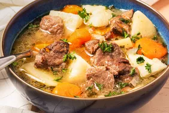

Irish stew

Description
Irish stew is made with lamb. Every Irish household has its own recipe for this famous dish. I like to add chunky pieces of parsnip for a little sweetness and fresh rosemary for a distinct flavor and aroma. Fantastic on St. Patrick's Day served with a pint of the black stuff, of course!
Ingredients
- 1 tablespoon olive oil
- 2 pounds boneless lamb shoulder, cut into 1 ½ inch pieces
- ½ teaspoon salt, plus more to to taste
- freshly ground black pepper to taste
- 1 large onion, sliced
- 2 carrots, peeled and cut into large chunks
- 1 parsnip, peeled and cut into large chunks
- 4 cups water, or as needed
- 3 large potatoes, peeled and quartered
- 1 tablespoon chopped fresh rosemary
- 1 cup coarsely chopped leeks
- 1 tablespoon chopped fresh parsley for garnish
Steps
- Heat oil in a large stockpot or Dutch oven over medium heat. Add lamb pieces and cook, stirring gently, until evenly browned. Season with salt and pepper.
- Stir in onion, carrots, and parsnips and cook gently for a few minutes. Stir in water. Cover and bring to a boil; reduce heat to low and simmer until lamb is tender, about 45 to 1 hour, depending on the cut of meat you used.
- Stir in potatoes, and simmer for 15 to 20 minutes, before adding leeks and rosemary. Continue to simmer uncovered, until potatoes are tender but still whole.
- Serve piping hot in bowls garnished with fresh parsley.